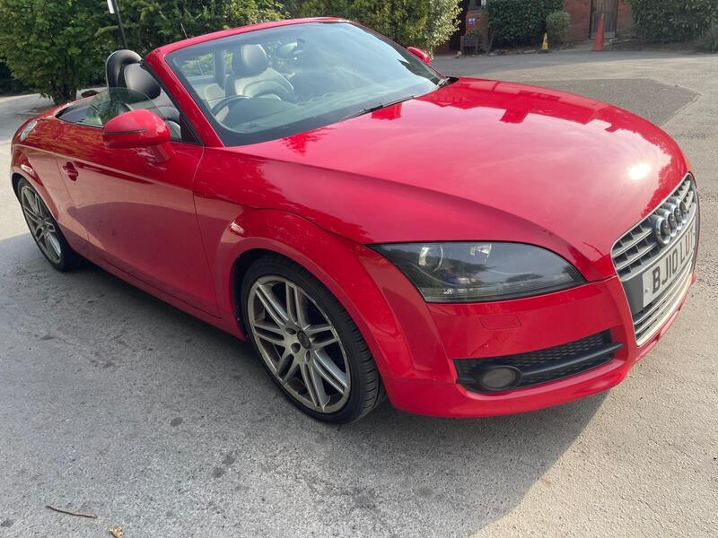
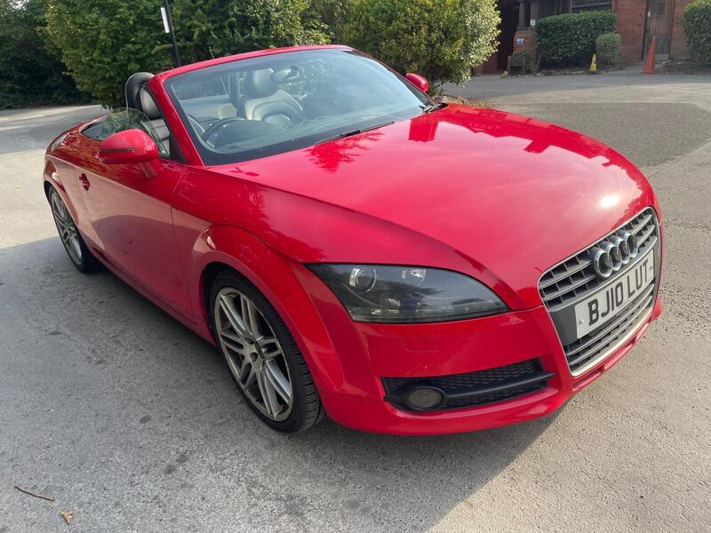
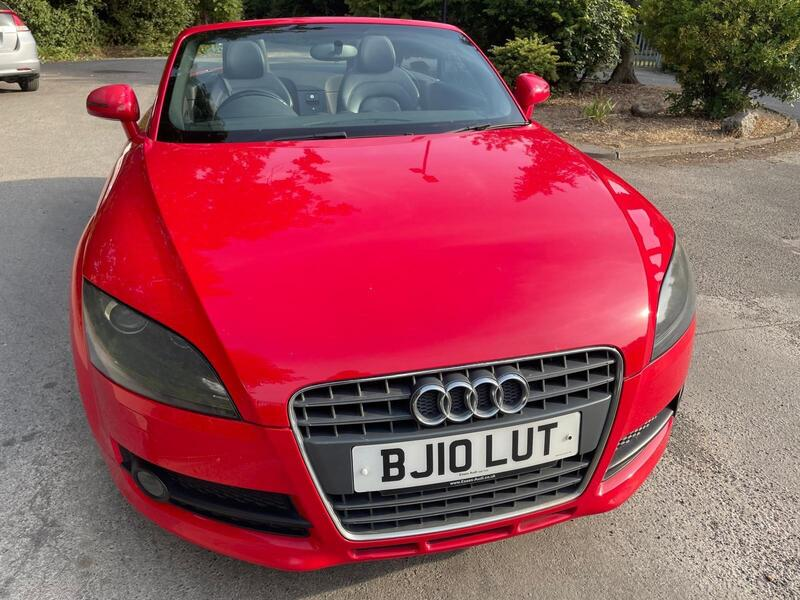
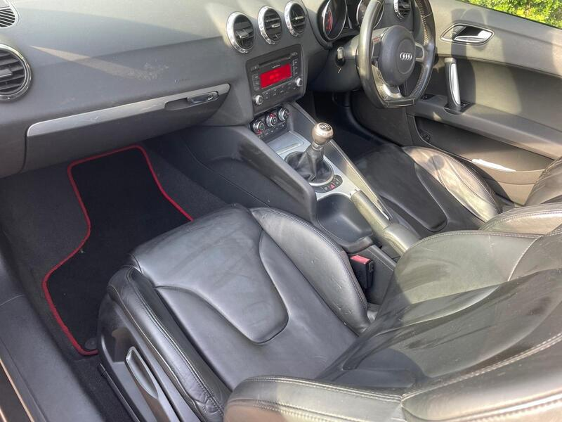

Seller photos from the AutoTrader ad.
Audi TT Roadster 1.8 TFSI
The newest TT here, with a long MOT. A comfortable, quick roof-down cruiser.
Key facts
| Price | £2,990 |
|---|---|
| Year | 2010 |
| Miles | 101,000 |
| Model | Audi TT Roadster 1.8 TFSI |
| Colour | Red |
| Registration | 2010 (10 reg) |
| Owners | 5 owners |
| Service history | Not stated |
| MOT (AutoTrader ad) | 2 Jun 2027 (ad) |
| MOT (seller's text) | June 2027 (ad) |
| Seller | Private |
| Location | The Hyde |
| From GU7 | 32 mi (AutoTrader) |
| Checked | 15 October 2026 |
Why buy it
- Mk2 1.8 TFSI manual, recently serviced, roof works (ad)
- Climate control, leather, 2 keys
Things to check
Pre-2012 TFSI: ask about oil consumption and listen for a timing-chain rattle on a cold start
19in wheels: check for kerbing and the tyre cost
- Audi TT Roadster (8N/8J) weak spots
Mostly OK, but Mk2 rear steel section and the metalwork around the hood can corrode; blocked hood drains soak carpets. Mk1: timing belt/water pump, coilpacks, failing dash pod (~£200). Mk2 2.0 TFSI: cam follower (2006-08), oil use and chain tensioner (2009-11); Haldex service on quattros.
Seller says (extract)
“Audi TT Roadster 1.8 TFSI Manual Petrol,Recently serviced,Leather Trim,19"Alloy Wheels,Climate Control,2 Keys ,Ulez free,MOT Expire June 2027.Drivers smoothly,Roof works.…”